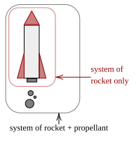
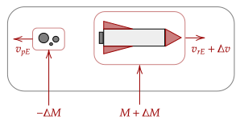
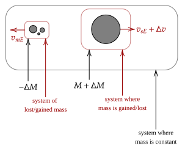

We noted some time ago the way a rocket is propelled is because it throws out mass (called propellant) out, and by Newton's third law, the mass applies a force on the rocket, throwing it up.
If we analyze the system of the rocket and propellant, we can see that its mass is constant. However, if we analyze the system of just the rocket, its mass is not constant; in fact, it is losing mass.

Here, we only really care about the system of the rocket; we don't care about whatever the propellant is doing. However, if we take the system of the rocket and propellant, it has constant mass. Thus, we can use momentum conservation in that system.
First, we note the initial and final momenta of that system. If let's say the system is moving at an initial velocity and with a full mass , we have this initial momenta.
Now, after ejection, we have two systems; the system of the propellant, and the system of the rocket. After some , we can say that propellant has been thrown out of the rocket. The rocket also has its mass changed by this amount.

We also note that the propellant has a velocity , and the rocket is given a velocity an increase in velocity . Thus, we write out the final momenta as follows.
With this, we can get the change in momentum of a system.
Recall that the change in momentum of a system is equal to the impulse delivered onto it; we will now invoke the momentum-impulse theorem. In particular, we will use it to get the net force over that time .
Let's now try distributing out the expression.
Now, to get the force at any time, we let approach zero, which effectively is taking the derivative. One thing to note is that the rightmost expression disappears, as the change in velocity approaches zero as approaches zero, so it altogether becomes zero.
Noting that the only way to change the momentum of a system is via an external force, this means that is an external force. In terms of our rocket system, this is the reaction force of throwing the propellant out.
Now, to simplify further, we note that is the relative velocity of the propellant to the rocket. This is useful since if we were to only note the motion of the rocket then we need not consult any other reference frame other than it.
Thus, we can write it as the following.
This surprising equation is very useful for us. Reading, it says that the force on an object is given by the external forces acting on it and the product of how fast the propellant is being thrown and the speed of the thrown propellant. Great!
Question 1
(HRK Q7.20) In 1920 a prominent newspaper editorialized as follows about the pioneering rocket experiments of Robert H. Goddard, dismissing the notion that a rocket could operate in a vacuum:
"That Professor Goddard, with his 'chair' in Clark College and the countenancing of the Smithsonian Institution, does not know the relation of action to reaction, and of the need to have something better than a vacuum against which to react—to say that would be absurd. Of course, he seems only to lack the knowledge ladled out daily in high schools."
What is wrong with this argument?
Answer
The crux of the argument is that a rocket can't work in a vacuum because there would be no action-reaction force, presumably because there would be nothing for the propellant to push against. This is wrong. The action-reaction pair happens solely in the rocket thruster, and it occurs by pushing a large amount of mass, which in turn, pushes the rocket back.
For reference, the above newspaper was The New York Times. They released an addendum around 50 years later, at the time of the Apollo 11.
"Further investigation and experimentation have confirmed the findings of Isaac Newton in the 17th century and it is now definitely established that a rocket can function in a vacuum as well as in an atmosphere. The Times regrets the error."
Question 2
Shown below is a solar sail, a type of device which can theoretically propel objects in outer space. It could serve as a replacement for rocket engines. How does it work, and why isn't this device used?

Answer
It works via having the light from the sun hit the sail, giving it a very tiny force. This force is negligible compared to that generated by a rocket engine.
For now, we postpone the use of the above equation and settle for more conceptual understanding of it. There is actually a lot to glean from it!
Question 3a
(HRK Q7.22) Can a rocket reach a speed greater than the speed of the exhaust gases that propel it? Explain why or why not.
Answer
Yes. Given enough time and fuel, the velocity of the rocket will become faster than that of the gases propelling it. The equation gives the acceleration of the rocket; thus, after enough time, the rocket will outspeed the gas propelling it.
Question 3b
(LSM CQ9.17) It is possible for the velocity of a rocket to be greater than the exhaust velocity of the gases it ejects. When that is the case, the gas velocity and gas momentum are in the same direction as that of the rocket. How is the rocket still able to obtain thrust by ejecting the gases?
Answer
Looking at our equation, the force on the rocket is dependent on the velocity of the gases relative to the rocket. The above observation is true, but the momenta are measured relative to a reference frame that is not the rocket.
It is still able to gain thrust because, in the reference frame of the rocket, the rocket and gas system has to have momentum conserved. Gas is thrown back, and thus to conserve momentum, the rocket is thrown forward.
Another explanation is the following. In the CM frame for the rocket and propellant system, it must be at constant velocity given there are no external forces. In that reference frame, the gas would appear to be moving backwards; and thus the rocket has to move forwards to keep the center of mass at constant velocity.
We can generalize all the above for a system of variable mass, such as the diagram below.

Another example of such a system that aren't rockets is the problem before with a cannon, cannonball, and cart; the system of variable mass there is the cannonball and cart system.